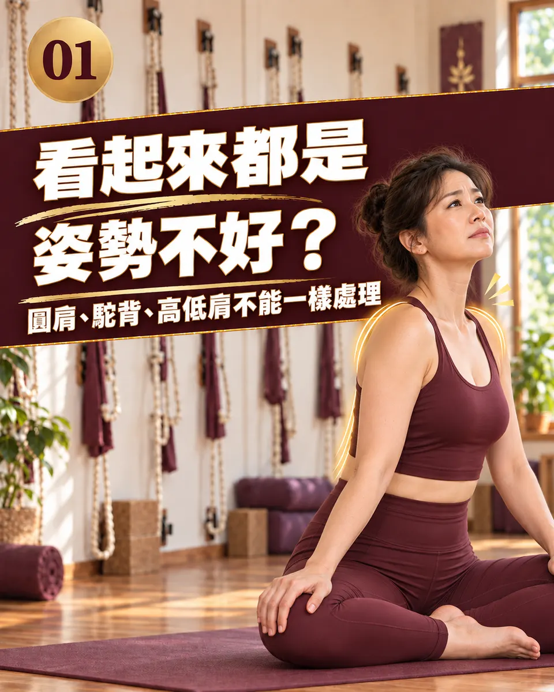

圓肩、駝背、高低肩差在哪？合照先看哪裡？

看團體照時，你先看到一邊肩比較高；換到側面，又覺得整個背比想像中圓。兩張照片都拍的是你，卻好像在說不同的事。
圓肩、駝背和高低肩描述的是不同的外觀線索：肩帶相對胸廓的位置、上背曲線與左右肩線高度。站法、手的位置和鏡頭角度都可能改變畫面。先在相近條件下描述你看到的差異，可以幫助對話；單張照片無法判斷肌力、骨盆或脊椎狀況，也不能確定疼痛來源。
圓肩、駝背和高低肩，照片各能看出什麼？
側面比較容易描述肩和上背的相對位置；從正面可比較肩線的左右高度。拍照時若刻意挺胸或一邊背包，當下的外觀也可能改變。想自己留下較一致的記錄，可看圓肩的居家觀察做法。
👆 手機版可左右滑動
| 觀察項目 | 可以描述什麼 | 無法單獨判定 |
|---|---|---|
| 圓肩 | 側面所見的肩帶相對胸廓位置。 | 胸肌張力或某條肌肉是否無力。 |
| 駝背外觀 | 上背曲線在這次站法下看起來較圓。 | 骨骼結構或胸椎病變。 |
| 高低肩 | 正面所見的左右肩線高度差。 | 是否由骨盆、脊椎或習慣造成。 |
看懂差別之後，需要再做什麼？
如果搜尋時看到上交叉症候群這個用語，可先了解它的適用範圍。想從日常動作開始，可看圓肩練習的起點；只想弄清楚現場拍攝的照片可以量哪些站姿角度，可先讀體態檢測內容。
常見問題
圓肩、駝背、高低肩可以同時出現嗎？
可以同時觀察到不同外觀線索。站法與拍攝條件也會影響每一項所見。
高低肩一定與骨盆或側彎有關嗎？
單靠兩肩高度無法確認原因。若有長期困擾，需結合個人情況與專業評估。
AI 體態檢測能看出病因嗎？
站姿照片與角度可供討論，無法直接測量肌力或診斷病因。
想再了解老師怎麼帶？
如果你想更清楚描述站姿，可以先確認拍攝和老師解讀的內容與界線。
了解 AI 體態檢測看哪些角度 →延伸閱讀 在家先看看圓肩觀察方法